Worried about forgetting to turn off the stove or electrical appliances.
Question 11 · 81.82%AIGER KITCHEN / 银龄智厨 / USER EXPERIENCE & PRODUCT DESIGN
A kitchen that adapts.
Independence that stays.
AIGER Kitchen is a connected-kitchen concept for independent aging. Familiar cooking actions trigger coordinated appliance responses; reminders and assistance become visible when the situation needs attention.
Explore the scenarios ↓Try the interface ↓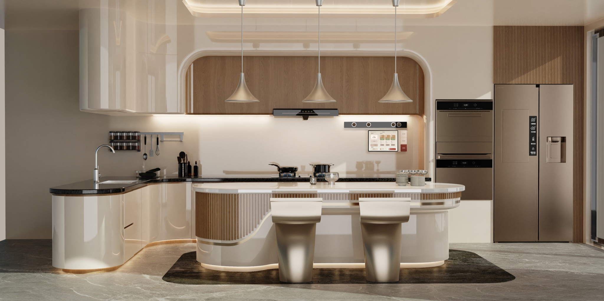
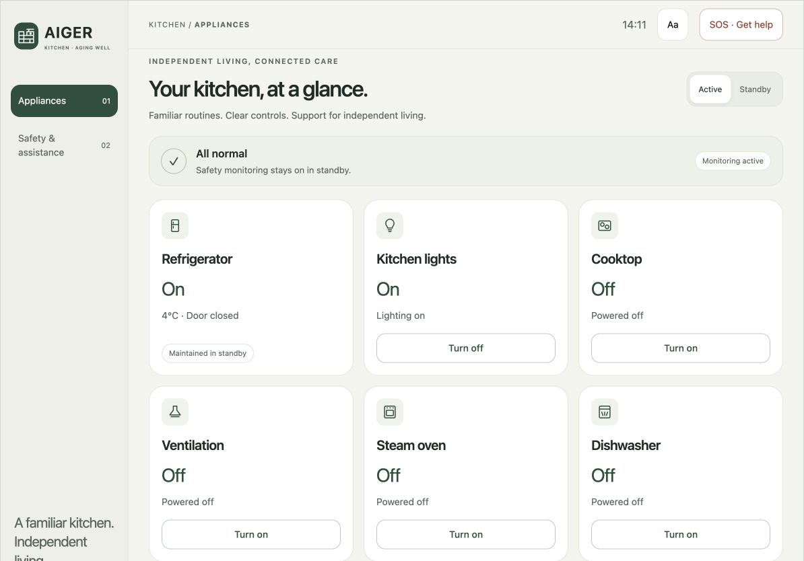
My contributionQuestionnaires & interviews · Simulated usability testing · Kitchen concept & central-control UI · AI-assisted browser prototype
User research22 questionnaire responses · 20 interviews
10 simulated usability participants
10 simulated usability participants
Current interface iterationAI-assisted browser prototype, 2026
New UI not retested with the original participants
New UI not retested with the original participants
RESEARCH & DESIGN
Help with the routine.
Leave room for the cook.
I interviewed middle-income adults aged 55–65 about their cooking routines and gathered 22 questionnaire responses. The questionnaire reached a broader age range: 19 respondents were 55–65, one was 71–75 and two were over 75. The project also included 20 interviews and simulated central-control usability sessions with 10 participants.
The questionnaire revealed a pattern of checking and remembering alongside cooking. This shifted the design emphasis toward visible appliance states and assistance that begins with familiar actions.
Remembered the extractor hood only after turning on the stove.
Question 6 · 59.09%Returned after leaving the kitchen to check whether equipment was off.
Question 6 · 50%Questionnaire findings · 22 valid responses · Multiple selections allowed. These are self-reported behaviors and concerns, not measurements of prototype performance.
One action. A visible response.
In Question 6, 13 of 22 respondents reported remembering the extractor hood only after switching on the stove. I used the familiar stove action as the starting point for coordinated ventilation and lighting, reducing the need to remember a separate step.
I brought the appliance states into one overview so that convenience would not come at the cost of visibility. Each device remains accessible from the same screen. The cooking scenario lets you inspect this response in the browser prototype.
A reminder is different from an emergency.
Safety was prominent in the questionnaire: 18 of 22 respondents worried about forgetting to turn off the stove or appliances, and 11 reported returning to check equipment after leaving. This supported making appliance states easy to inspect. I also kept routine reminders distinct from urgent assistance.
The seasoning view makes previous additions readable, while the fall scenario presents a clear alert and assistance states. Two destinations—Appliances and Safety & assistance—separate everyday control from situations that need attention.
A shorter path through the kitchen.
In Question 10, 13 of 22 respondents described the sequence refrigerator → sink → worktop → stove → serving. I used this sequence to organize the continuous work area around food preparation and cooking, rather than treating appliances as isolated products.
The layout is a design response to reported routines; reduced walking distance and fatigue still need evaluation in the physical space.
Next, I would test whether users can explain an automatic action, find a device control and distinguish a reminder from an emergency. The current interface has not been retested with the original participants.
Step into the kitchen.
A first-person VR walkthrough complements the spatial renders with a view from inside the kitchen. It shows the cooking area and surrounding appliances; the interface and automatic responses are demonstrated separately below.
Experience the kitchen at eye level.
Loading spatial walkthrough…
First-person VR walkthrough · Spatial concept · Edited playback preview
View the original 25-second video ↗
A calm, readable control surface.
Two destinations: Appliances, and Safety & assistance. The landscape interface brings safety status above a consistent appliance overview.
Try it: switch pages, control appliances, and explore assistance. Interactive simulation · Open full size ↗
Support begins with the situation.
The central interface connects what is happening in the room with what the kitchen does next. These concept scenarios show the trigger, visible response and user control.
SCENARIO 01
Start cooking naturally.
Coordinate familiar actions to reduce separate steps.
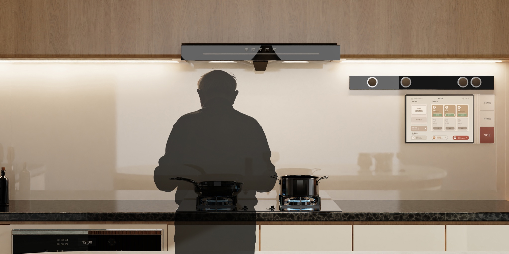
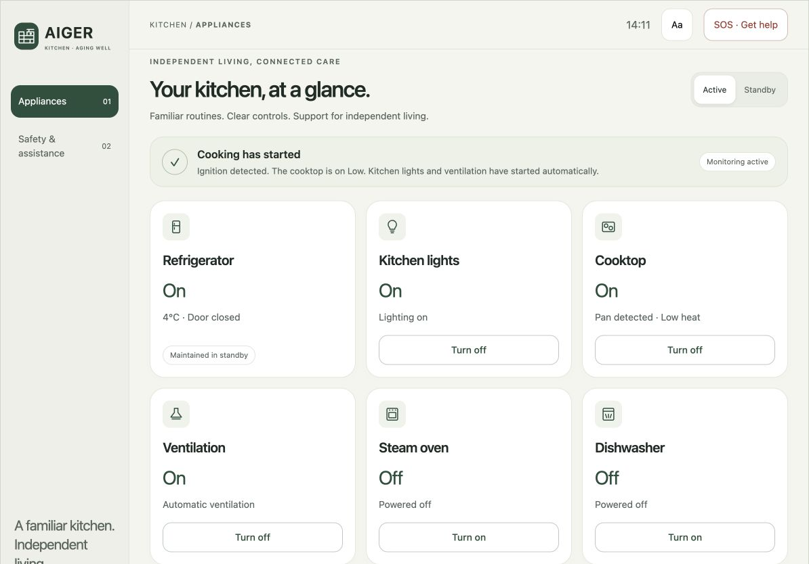
Trigger
The cook turns on the stove.
System response
Lighting and ventilation activate alongside the cooktop.
Visible feedback / control
The appliance overview explains what is on; each device remains controllable.
SCENARIO 02
A record when memory needs support.
Support a decision without taking the decision away.
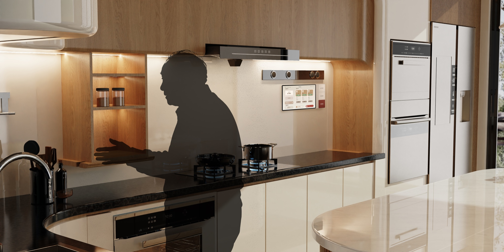
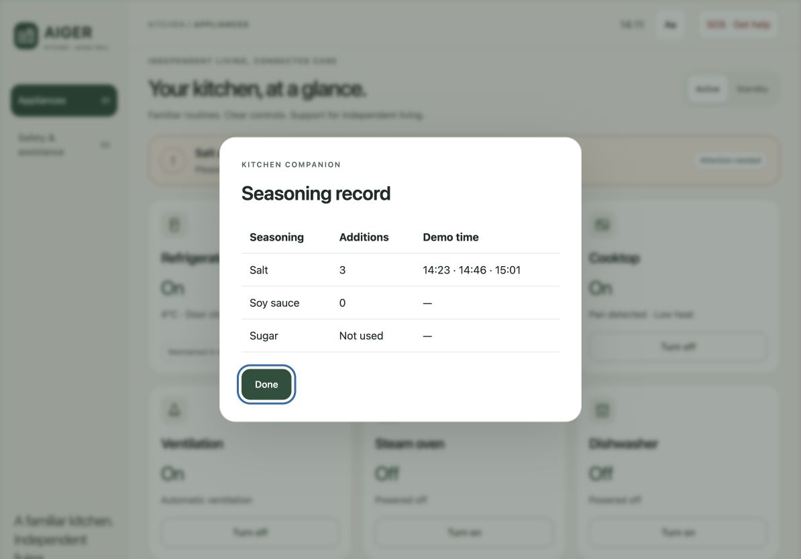
Trigger
Seasoning is added during cooking.
System response
The system records additions and flags repeated salt additions.
Visible feedback / control
A readable record lets the cook check before adding more.
SCENARIO 03
Escalate when help is needed.
Match the level of intervention to the seriousness of the situation.
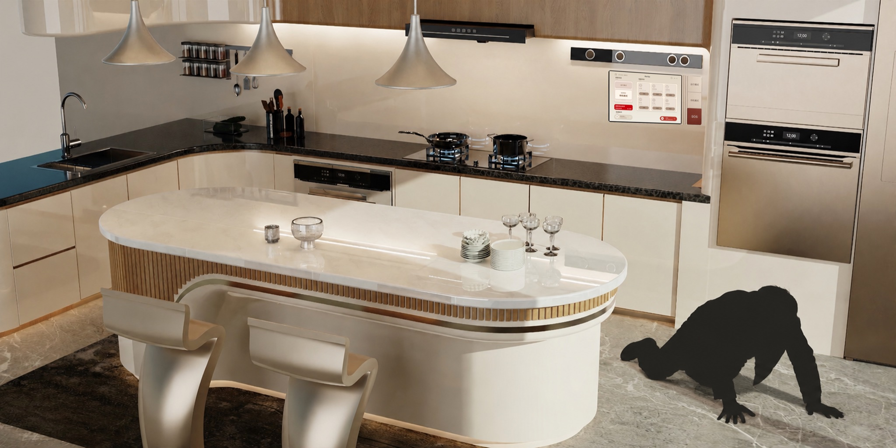
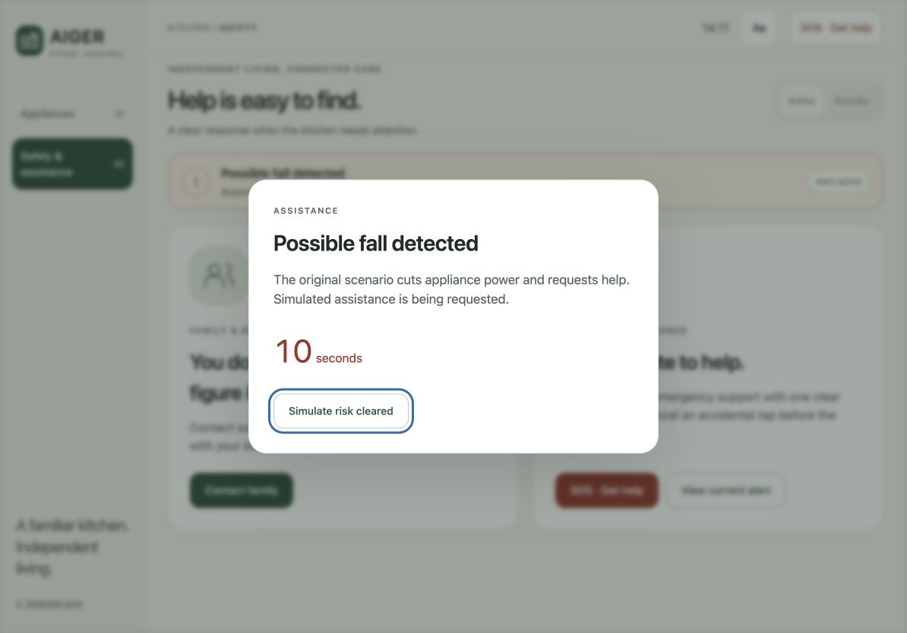
Trigger
A possible fall is detected in the kitchen.
System response
The concept triggers appliance shutdown and requests assistance.
Visible feedback / control
A clear alert makes the response visible while help is requested.
See the response. Try the controls.
Choose a simulated situation, then interact with the same two-page interface. Extended absence reduces heat and opens the original 30-second shutdown confirmation.
Interactive simulation · No real sensing, appliance connection or call. Open the landscape prototype ↗
Part of the home.
The wall-mounted interface sits alongside familiar physical controls. The spatial views show how the digital experience fits into the kitchen.
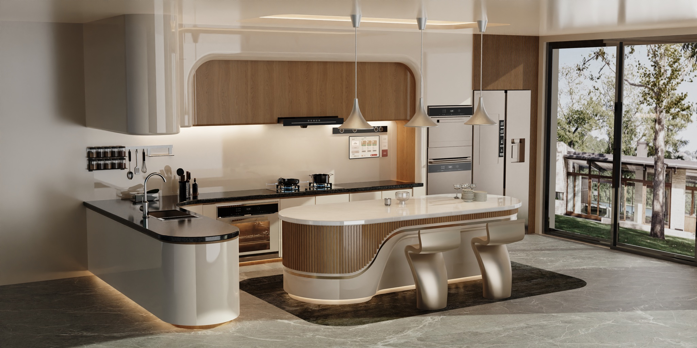
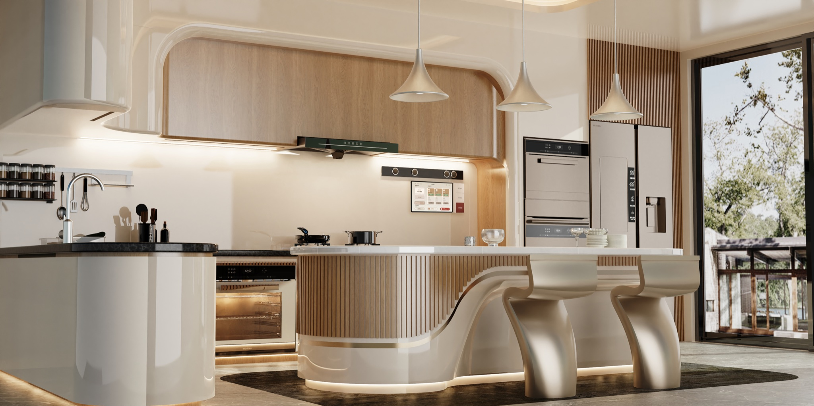
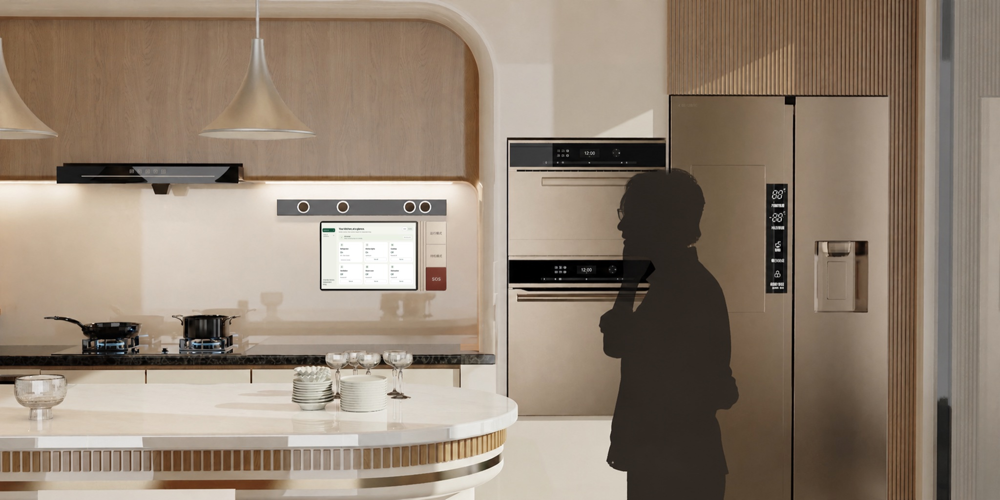
Original interaction rules, retained.
| Context | Original response retained in demo |
|---|---|
| Pan placed → ignition | Open gas valve / prepare hood, then activate ventilation when ignition is detected. |
| Hot pan / oil splatter / dry pan | Show the context. Oil splatter automatically reduces heat; continued dryness lowers heat in stages. |
| Extended absence | Reduce heat, show confirmation, then turn off after 30 seconds without a response. |
| Seasoning added | Record additions; show the repeated-salt reminder and a readable record. |
| Steam oven / dishwasher | Show the operating stage and completion/removal reminder. |
| Standby | Keep refrigerator, safety monitoring, and the oven keeping food warm active. |
| SOS / family assistance | Retain confirmation, 10-second SOS countdown, simulated request and connection states. |
| Gas / water / fall alert | Show the original automatic shutdown and assistance scenario. Remove manual power controls during critical alerts. |
Interactive prototype.
The AI-assisted browser prototype simulates sensing, appliance responses and assistance calls. The spatial walkthrough was created by a collaborator.